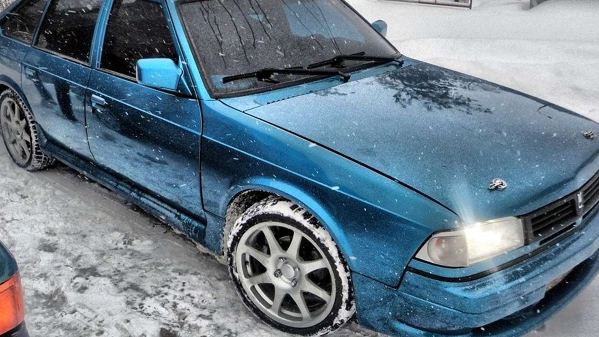
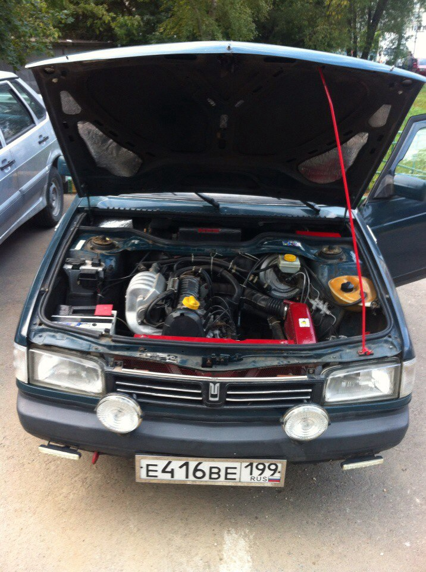
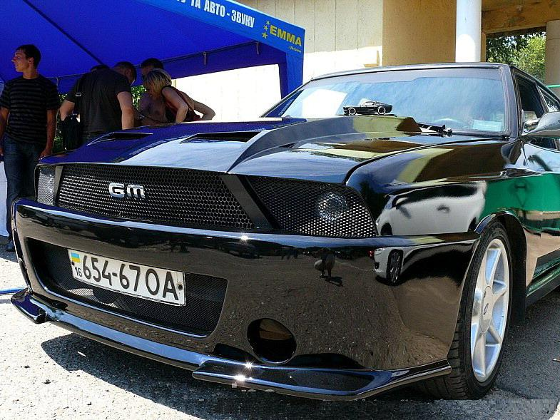
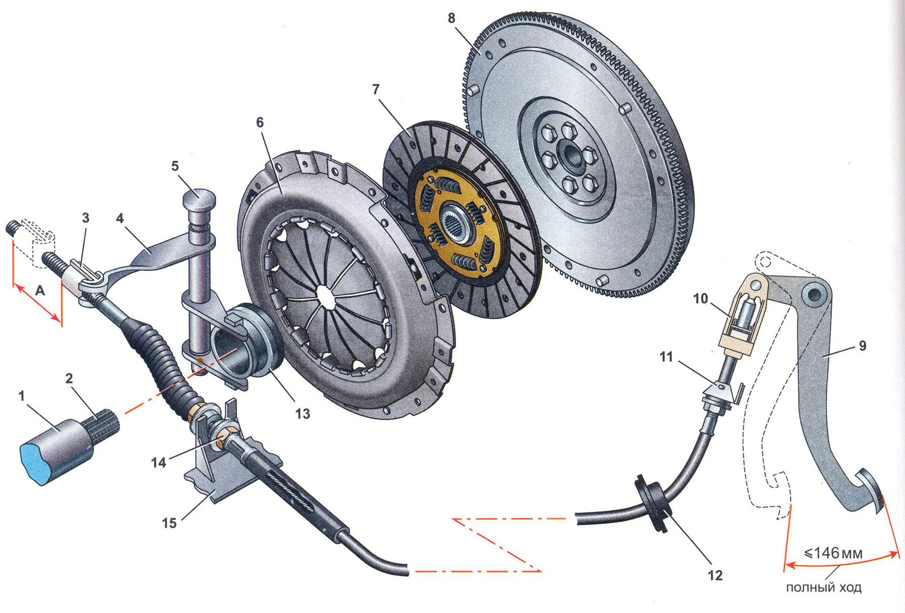
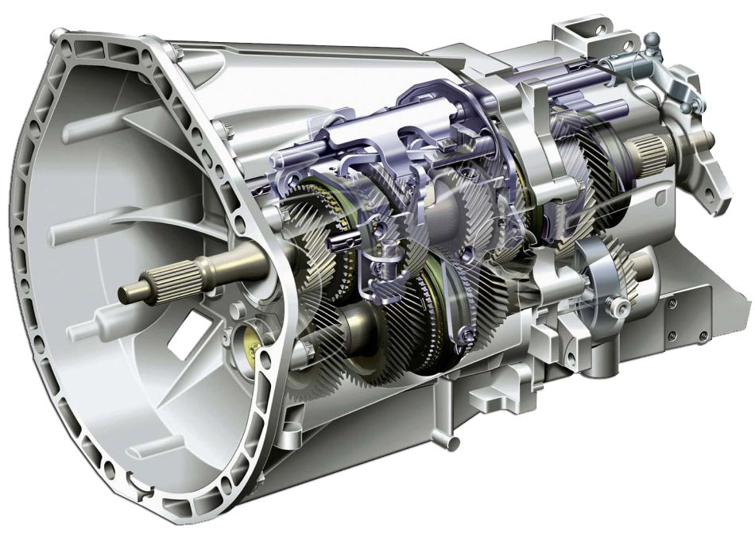
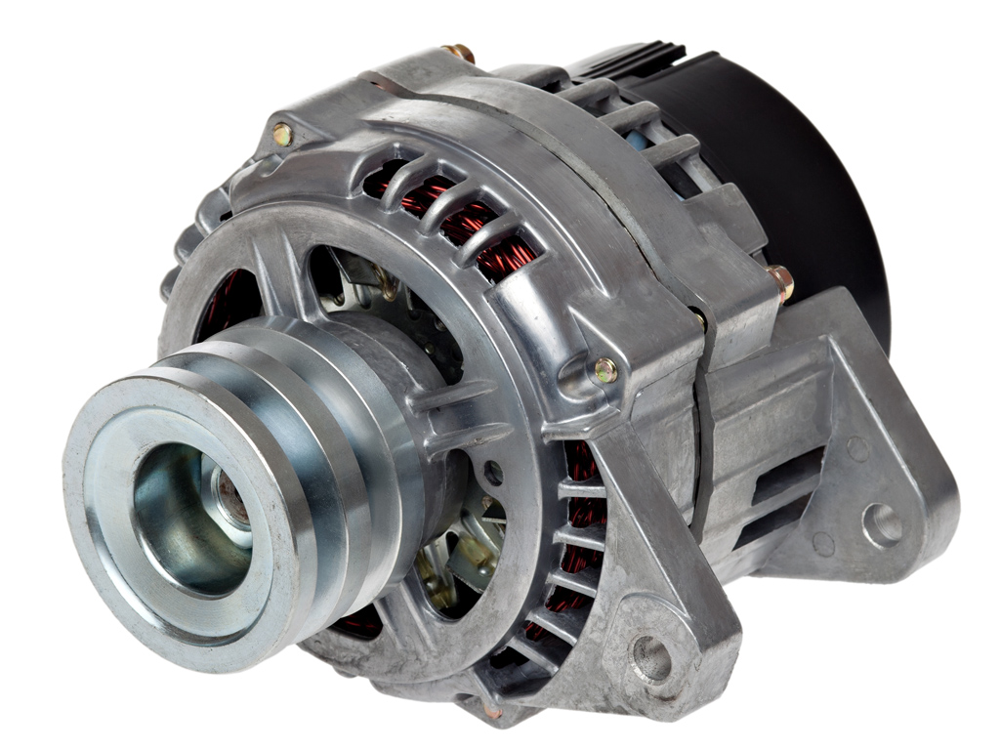
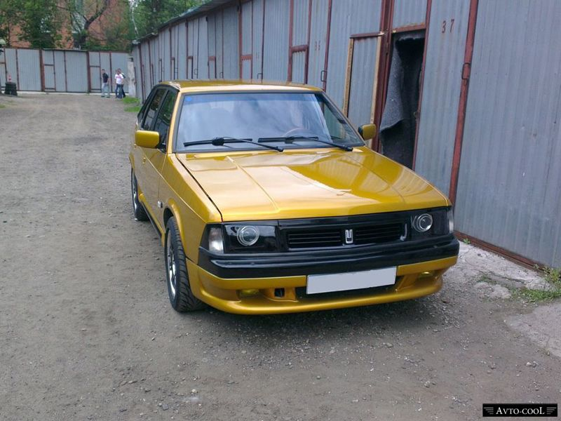
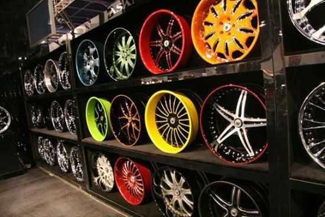
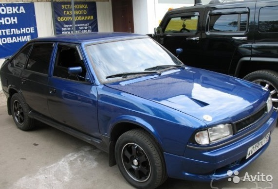

Москвич 2141-02 Святогор
Модернизированная версия автомобиля «Москвич-2141» дебютировала в 1997 году.
Обновлённый автомобиль получил не только новый индекс (2141-02) и собственное имя «Святогор»,
но и заметно изменённую внешность и более мощный двигатель. Благодаря новым фарам фирмы «Hella» внешность
автомобиля стала более привлекательной и меньше выделялась на фоне иностранных моделей середины девяностых годов.
Читать далее

Сердце Святогора
Серия F (от фр. fonte, чугун) — семейство рядных четырёхцилиндровых двигателей производства компании Renault.
Двигатель производится с начала 1980 годов, работает на бензине (с 8 или 16 клапанами) или на дизельном топливе.
Рабочий объём двигателей серии F составляет от 1,7 до 2,0 л.
Читать далее

Стайлинг
Стайлинг автомобиля (от англ. styling — стилизация) — изменение внешнего вида или салона автомобиля, для создания индивидуального стиля,
выделяющего автомобиль в потоке и привлекающего внимание окружающих. Стайлинг подразумевает установку иных бамперов или спойлеров,
окраску автомобиля в необычный цвет или несколько цветов, аэрография кузова, установку подсветки днища, различных других световых решений,
перетяжку салона кожей или алькантарой, установку качественной аудиосистемы, установку авторесничек, авто-винил и другие приёмы,
позволяющие придать автомобилю индивидуальный стиль и выделить его из тысяч подобных.
Читать далее

Сцепление
Сцепление — механизм, работа которого основана на действии силы трения скольжения (фрикционная муфта); предназначен для передачи крутящего момента, плавного переключения передач, гашения крутильных колебаний, кратковременного отсоединения трансмиссии от маховика двигателя.
Обычно термин «сцепление» относится к компоненту трансмиссии транспортного средства, предназначенному для подключения или отключения соединения двигателя внутреннего сгорания с коробкой передач.
Изобретение сцепления приписывают Карлу Бенцу.
Сцепление служит для временного разобщения коленчатого вала двигателя с силовой передачей автомобиля, что необходимо при переключении шестерён в коробке передач и при торможении автомобиля вплоть до полной его остановки.
Читать далее

МКПП
Механическая коро́бка (переключения) переда́ч (МКПП или МКП) — разновидность коробки передач, механизм, предназначенный для ступенчатого изменения передаточного отношения, в котором выбор передачи осуществляется оператором (водителем) вручную.
Названа так, поскольку весь её основной функционал реализуется исключительно за счёт механических устройств,
без применения гидравлических или электрических элементов (в отличие от гидромеханической или электромеханической трансмиссий, содержащих в своей конструкции, соответственно, гидравлические и электрические элементы).
В механической коробке передач это осуществляется за счёт осуществляемого водителем переключения ступеней (передач), имеющих различное передаточное число.
Читать далее

Генератор
Автомоби́льный генера́тор — устройство, обеспечивающее преобразование механической энергии вращения коленчатого вала двигателя автомобиля в электрическую.
Автомобильный генератор используется для питания электропотребителей, таких как система зажигания, автомобильная светотехника, бортовой компьютер, система диагностики и другие, а также для заряда автомобильного аккумулятора.
К автомобильным генераторам предъявляют высокие требования по надёжности, так как генератор обеспечивает бесперебойную работу большинства компонентов современного автомобиля.
Типовая мощность современного генератора в легковом автомобиле около 1кВт.
Читать далее

Москвич
В процессе разработки модели оперение кузова «Москвича» было спроектировано заново, в результате чего экстерьер автомобиля существенно отличался от французского образца и, хоть и с некоторой натяжкой, но соответствовал уровню середины восьмидесятых годов.
По воспоминаниям создателей,
кузов «Симки» со снятыми агрегатами непосредственно использовался в качестве основы для пластилинового макета «Москвича».
Читать далее

Диски
Автомобильное колесо является неотъемлемой частью автомобиля и совместно с шиной представляют собой движитель колёсного транспортного средства.
Колёса из лёгких сплавов можно поделить на три категории (по технологии производства): литые, кованые и комбинированные (сборные).
Читать далее

Москвич
Не был кузов «Москвича» точной копией иностранной модели и с точки зрения пропорций и габаритных размеров — в частности,
была немного уменьшена колёсная база, укорочен задний свес и увеличен передний.
Интерьер был разработан полностью самостоятельно, причём по всем габаритам он превосходил «Симку».
Читать далее